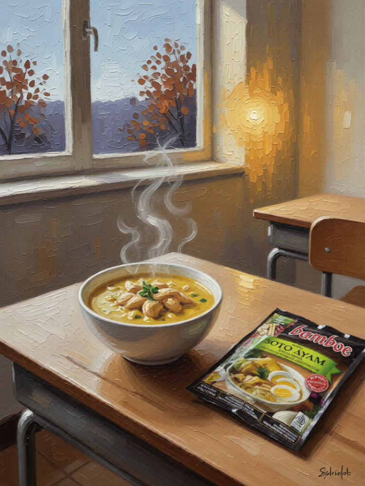

OBJECT #01 • AI-RECONSTRUCTED PAINTING, 2026
Bamboe Soto Ayam
Soto Without the Warung
Back home, I almost never cooked soto. It was always nearby, warm and filling, from a roadside stall to a five-star hotel. In Korea, I have not found Indonesian restaurants selling it, and the seasoning is easy enough, so I had to make it myself. When late autumn arrives, it is what I cook again and again. The taste is not quite the same. There are no condiments, no fried snacks, no warung around the corner. Still, it brings something back.